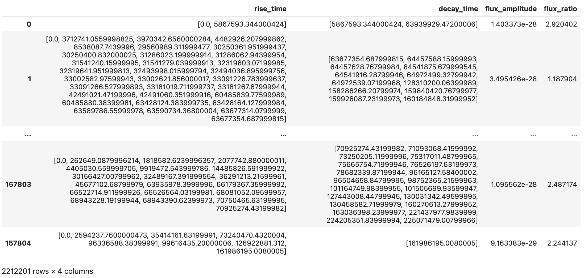
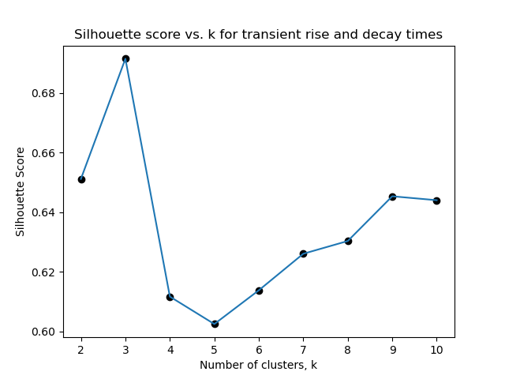

Overview
Naive Bayes (NB) is a supervised machine learning method that incorporates Bayes' theorem to predict the classes occupied by observations in a dataset. Note that this requires labeled data, corresponding to the classes in this case. NB trains data by analyzing the features within each class to predict what those features look like, and then estimates a probability distribution. Bayes theorem uses the prior and likelihood, which describe the fraction of training rows that have a specific label (y=c) and the behavior of the features that have class y=c, respectively. The "naive" part comes in by assuming conditional independence, meaning that observations within a class are independent of each other. This ultimately allows for the likelihood to be split into the product of individual observation probabilities. There are several different types of NB classifiers, including Gaussian NB, Multinomial NB, and Bernoulli NB. Gaussian NB is used for continuous features while Multinomial NB is used for events/counts (or discrete features). Finally, Bernoulli NB is used for binary features specifically. In the case of this project, Multinomial NB will provide the best classifier for transient rise/decay times.
Data Prep
Since NB will predict labels of observations within the dataset, labeled numeric data is required. In the context of astrophysical transient detections, one useful label that is presented in the data is the photometric band of each observation. These bands (g, r, i) describe the wavelength ranges that each transient detection was observed in. In particular, these correspond to 400-550nm, 550-700nm, and 700-850nm, respectively. These are measured using transmission curves, which ultimately come from optical inference filters built into the instrument. All of these wavelength ranges are found in the optical/visible range of the electromagnetic spectrum, with a small fraction occupying the near-infrared range. The goal of training a NB classifier here is to see whether or not the photometric bands of transient detections can be predicted based on transient rise/decay times. To obtain more sky coverage than before, 10 randomly-selected partitions will be used to train the NB classifier, rather than the first 10 partitions of data which occupy a narrow region on the sky. A snapshot of the data is shown below in Figure 1, which includes the transient rise/decay times and the photometric bands (used as labels). This data is a result of the data cleaning that was described in the DataPrep_EDA tab. The full 10 partition dataset contains 3,582,067 rows. Finally, in order to construct a NB classifier, the data need to be split into testing and training datasets. This was accomplished by allocating 20% of the dataset to testing data, and the other 80% to training data. The split was chosen randomly, but can be reproduced using a random_state identifier. Finally, the split attempts to keep roughly the same proportions of each label in both datasets.

- Lightcurves ("s3://ipac-irsa-ztf/ztf/enhanced/dr24/lc/hats")
Code
For naive Bayes...
View Jupyter NotebookResults

Conclusions
Using the figures from the results section above...